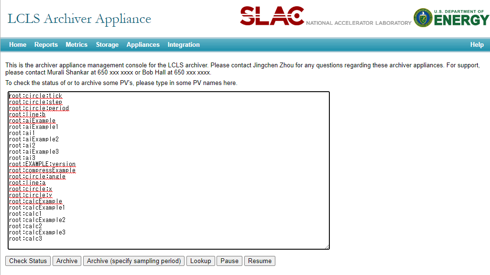
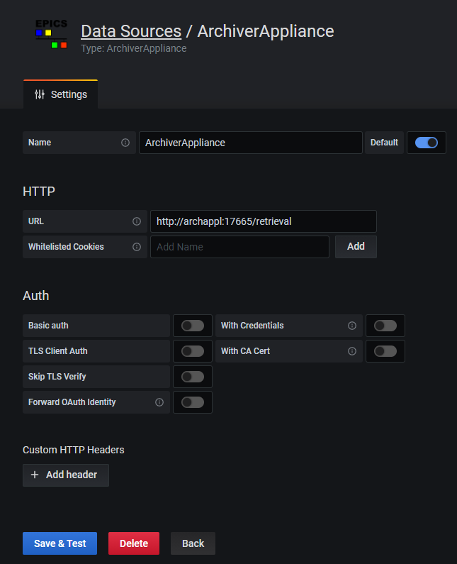
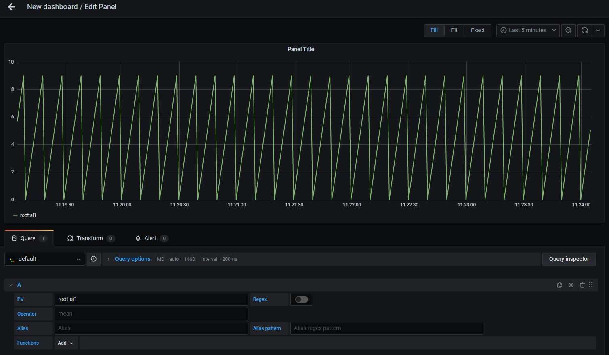

Development
Development setup
This data source plugin consists of both frontend and backend components.
Front-end Development
Node version v12.x is recommended. If you’re new to the Node.js ecosystem, Node Version Manager is a good place to start for managing different Node.js installations and environments.
grafana-toolkit is used to develop the plugin. Please refer grafana-toolkit documentation for more information.
Begin by installing Yarn (https://yarnpkg.com/)
npm install -g yarn
Install dependencies
yarn install
Build plugin in development mode or run in watch mode
yarn dev
or
yarn watch
Build plugin in production mode
yarn build
Back-end Development
If the Mage build tool is not already installed, you may install it using the installation instructions on the Mage homepage
Update Grafana plugin SDK for Go dependency to the latest minor version:
go get -u github.com/grafana/grafana-plugin-sdk-go
Build backend plugin binaries for Linux, Windows and Darwin:
mage -v
List all available Mage targets for additional commands:
mage -l
Test environment with Docker Compose
Thanks to pklaus / docker-archiver-appliance and pklaus / archiver-appliance-with-example-ioc, the test environment is available with Docker Compose.
docker-compose up
The following containers are runinng after docker-compse up.
| Name | Description |
|---|---|
| grafana | Runs a Grafana server. |
| archappl | Runs a EPICS Archiver Appliance. |
| redis | Runs a datastore for the persistance of the appliance configuration. |
| example | Runs a example EPICS IOC to be archived. |
To set up the Archiver Appliance, open http://localhost:17665/mgmt/ui/index.html. You can add the PVs served by the example IOC on this page.
Enter the following lines in the input field and then clicking the Archive button.
the Archive will be start a few minuites later.
root:circle:tick
root:circle:step
root:circle:period
root:line:b
root:aiExample
root:aiExample1
root:ai1
root:aiExample2
root:ai2
root:aiExample3
root:ai3
root:EXAMPLE:version
root:compressExample
root:circle:angle
root:line:a
root:circle:x
root:circle:y
root:calcExample
root:calcExample1
root:calc1
root:calcExample2
root:calc2
root:calcExample3
root:calc3

To add a data source, open Grafana (http://localhost:3000). On the data sources page, add a data source and set URL as http://archappl:17665/retrieval.

The following is a example query with this test environment.

Build documentation
This documentation is build by Sphinx. Follow below steps to build documentation.
python -m venv env
source env/bin/activate
pip install sphinx commonmark recommonmark sphinx_rtd_theme sphinx-markdown-tables
make html